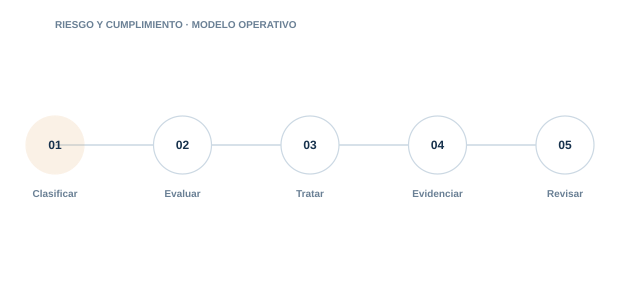

02 · PILAR
Riesgo y cumplimiento
Traducir normas y obligaciones en decisiones, controles y evidencias verificables.

Directorio del pilar5 guías · acceso directo
02.0102.0202.0302.0402.05
EU AI Act
Clasifica el sistema. identifica el rol de la organización y construye un expediente de cumplimiento.
ISO/IEC 42001
Implanta un sistema de gestión de IA integrable con ISO 27001 y otros sistemas de gestión.
Evaluación de impacto de IA
Analiza efectos sobre personas. derechos. seguridad. negocio y sociedad antes del despliegue.
Registro de riesgos de IA
Convierte preocupaciones difusas en escenarios. controles. propietarios y seguimiento.
Clasificador de riesgo · AI Act INTERACTIVO
Responde y obtén la categoría de riesgo de tu sistema y sus obligaciones.

Documento destacadoReglamento Europeo de Inteligencia Artificial
Ver documento →Guía operativa de 26 páginas para iniciar un proyecto de adecuación al AI Act.
Aplicar fuera de la biblioteca
GRCReal ↗AI Act en GRCReal
EvaluarChecklist AI ActRevisa de forma orientativa tu preparación frente a los requisitos del AI Act.Abrir ↗AplicarClasificador AI ActObtén una clasificación orientativa del sistema y sus obligaciones aplicables.Abrir ↗AprenderQuiz AI ActPon a prueba tu criterio sobre riesgo, clasificación y obligaciones del AI Act.Abrir ↗
01
ClasificarControl y evidencia aplicable
02
EvaluarControl y evidencia aplicable
03
TratarControl y evidencia aplicable
04
EvidenciarControl y evidencia aplicable
05
RevisarControl y evidencia aplicable
Cada guía incluye explicación, implantación, controles, evidencias, errores habituales, métricas y referencias.